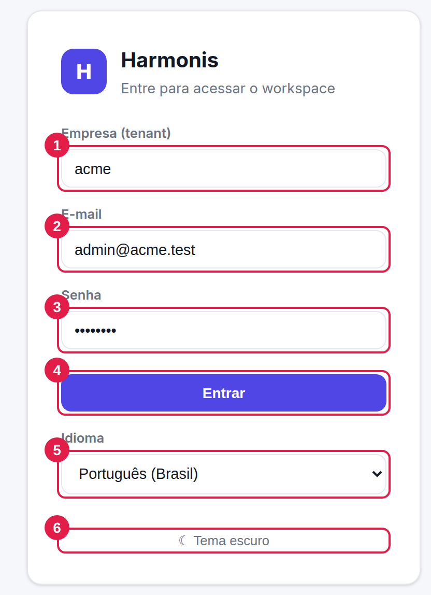
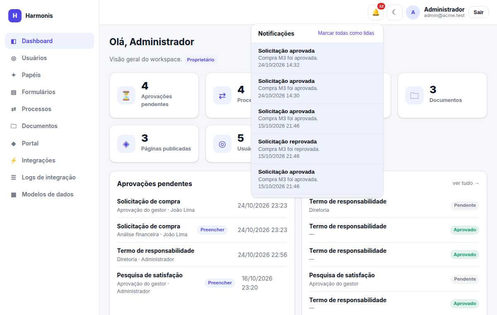
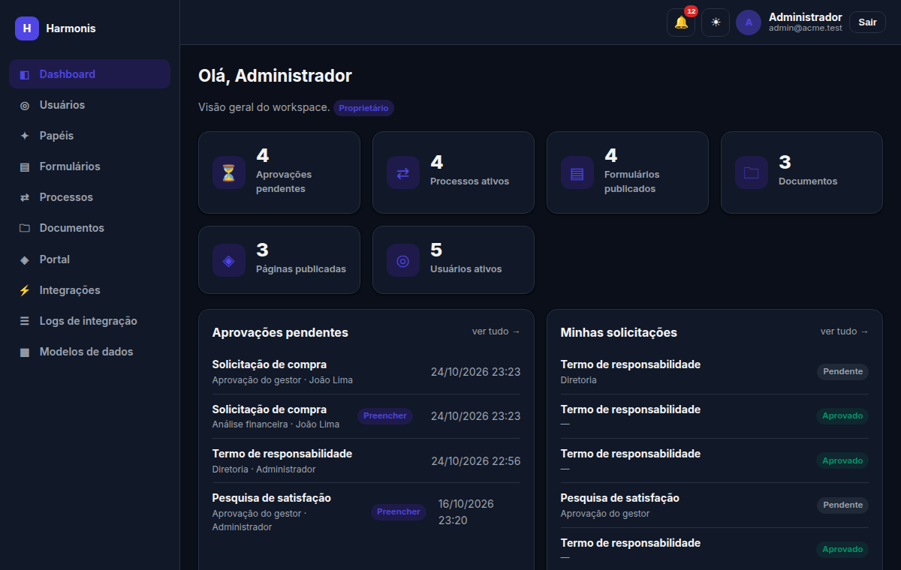
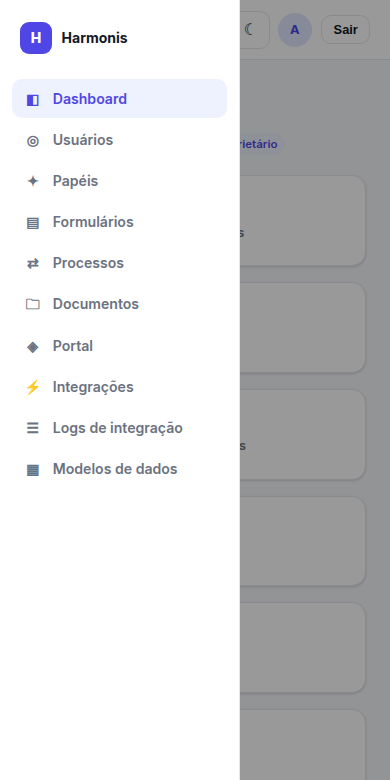
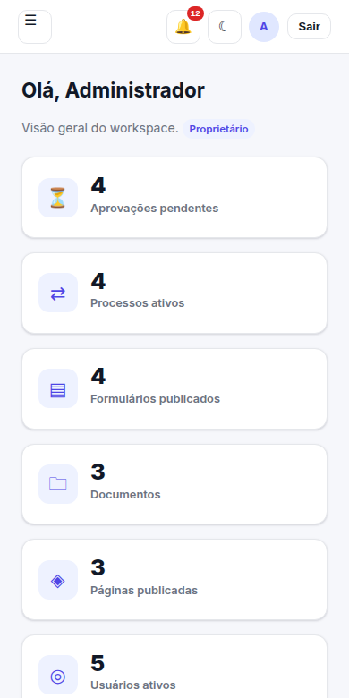

Primeiros passos
Como entrar, o que há em cada área da tela, como funcionam as notificações e como usar o Harmonis no celular ou no tema escuro.
Entrando no sistema

- Empresa (tenant) — o identificador do seu ambiente (ex.:
acme). Quem administra o sistema informa esse valor. Ele é obrigatório porque cada empresa tem seu próprio banco de dados. - E-mail — o e-mail cadastrado para você (maiúsculas e minúsculas não importam).
- Senha — sua senha. Usuários novos recebem uma senha inicial gerada pelo sistema (veja Senha inicial).
- Entrar — valida os dados e abre o dashboard.
- Idioma — seletor de idioma da tela de login, útil antes de entrar (veja Idioma).
- Tema — alterna entre tema claro e escuro; a escolha fica salva neste navegador.
- Credenciais inválidas. — empresa, e-mail ou senha incorretos, ou usuário inativo. Por segurança a mensagem é a mesma em todos os casos.
- Não foi possível entrar. Verifique o servidor. — o servidor não respondeu (ou a empresa informada não existe). Avise a TI.
Após o login você permanece conectado: o sistema renova a sessão sozinho, sem pedir senha, enquanto você usa o Harmonis (até 7 dias sem uso, e no máximo 30 dias seguidos; valores definidos pela TI). Quando a sessão realmente termina, você volta à tela de entrada. Por segurança, a sessão fica em cookies protegidos do navegador, inacessíveis a scripts. A versão atual não possui tela para trocar a própria senha nem recuperação por e-mail; em caso de esquecimento, acione a TI (veja Dúvidas).
Anatomia da tela

- Menu lateral — um item por módulo. Só aparecem os módulos permitidos ao seu papel. O item ativo fica destacado.
- Sino de notificações — o número vermelho indica notificações não lidas (veja abaixo).
- Tema — alterna claro/escuro em qualquer tela.
- Usuário — mostra nome e e-mail logados; Sair encerra a sessão.
- Cartões de indicadores — clicáveis, levam ao módulo correspondente.
- Listas rápidas — últimas pendências e solicitações.
O que o dashboard mostra
Cada cartão e lista só aparece se você tiver a permissão relacionada:
| Item | Conteúdo | Permissão |
|---|---|---|
| Aprovações pendentes | Quantas tarefas aguardam a sua decisão. | processes.view |
| Processos ativos | Processos ainda em andamento na empresa. | processes.view |
| Formulários publicados | Total de formulários abertos a respostas. | forms.view |
| Documentos | Total de documentos no GED. | documents.view |
| Páginas publicadas | Total de páginas no portal. | pages.view |
| Usuários ativos | Pessoas com acesso liberado. | users.view |
| Aprovações pendentes (lista) | As tarefas mais recentes que você pode decidir. | processes.view |
| Minhas solicitações (lista) | Suas últimas solicitações e o status de cada uma. | processes.view |
| Respostas recentes (lista) | Últimas respostas recebidas pelos formulários. | forms.submissions |
Notificações

O Harmonis cria notificações dentro do sistema em dois casos:
- Aprovação solicitada — quando uma etapa é aberta, todos os aprovadores dela são avisados (o próprio solicitante não é avisado de suas solicitações).
- Solicitação aprovada / reprovada — quando o processo termina, o solicitante é avisado.
Use Marcar todas como lidas para limpar o contador. Notificações levam à tela Processos.
O contador é atualizado quando a tela é carregada e ao abrir o sino. Para ver algo recém-criado, abra o sino ou recarregue a página.
Convenções da interface
| Elemento | Significado |
|---|---|
| ✎ | Editar (em formulários, na lista, significa Preencher). |
| ⚙ | Editar a definição do formulário (campos). |
| ⇄ | Abrir o fluxo de aprovação do formulário. |
| 📊 | Ver as respostas do formulário. |
| 🗑 | Excluir/remover (sempre pede confirmação). |
| ⬇ / ⬆ | Baixar / enviar arquivo. |
| ↑ ↓ | Mover um item para cima ou para baixo. |
| ✕ | Remover um item de uma lista (opção, metadado, aprovador, cabeçalho…). |
| ☰ | Ver os logs (nas integrações) / abrir o menu (no celular). |
| Verde · Vermelho · Cinza | Sucesso/ativo/publicado · erro/inativo/reprovado · neutro/pendente/rascunho. |
| * | Campo obrigatório no formulário. |
| Janelas (modais) | Abrem sobre a tela; use o ✕ no canto superior direito (ou Cancelar/Fechar) para sair sem salvar; clicar fora da janela não a fecha, para evitar perder o que foi digitado. |
As datas das listas (ex.: “10/15/26, 9:52 PM”) seguem o formato do navegador/idioma configurado na aplicação. Os campos de data dos formulários seguem o idioma do seu navegador.
Idioma
O Harmonis está disponível em Português (Brasil), English e Español. O idioma muda os textos da interface, o formato de datas e o PDF das fichas, e também define quais formulários você vê para preencher (veja Idiomas do formulário).
- Onde escolher: em Meu perfil (clique no seu nome no canto superior direito) → Idioma preferido → Salvar. A página é recarregada já no novo idioma.
- Administradores também definem o idioma de cada pessoa no cadastro do usuário (campo Idioma). Quem é criado sem escolha começa em Português.
- Tela de login: há um seletor de idioma, útil antes de entrar. Depois do login vale o idioma salvo no seu perfil.
Os textos que as pessoas escrevem (nomes de formulários e campos, etapas do fluxo, páginas do portal, nomes de papéis personalizados) aparecem como foram digitados. Algumas mensagens técnicas de erro de integrações também permanecem em português.
Tema escuro e uso no celular




As telas se adaptam a telas pequenas: o menu vira um painel e os campos dos formulários se reorganizam em uma coluna. O editor de fluxo funciona melhor em tela larga.
